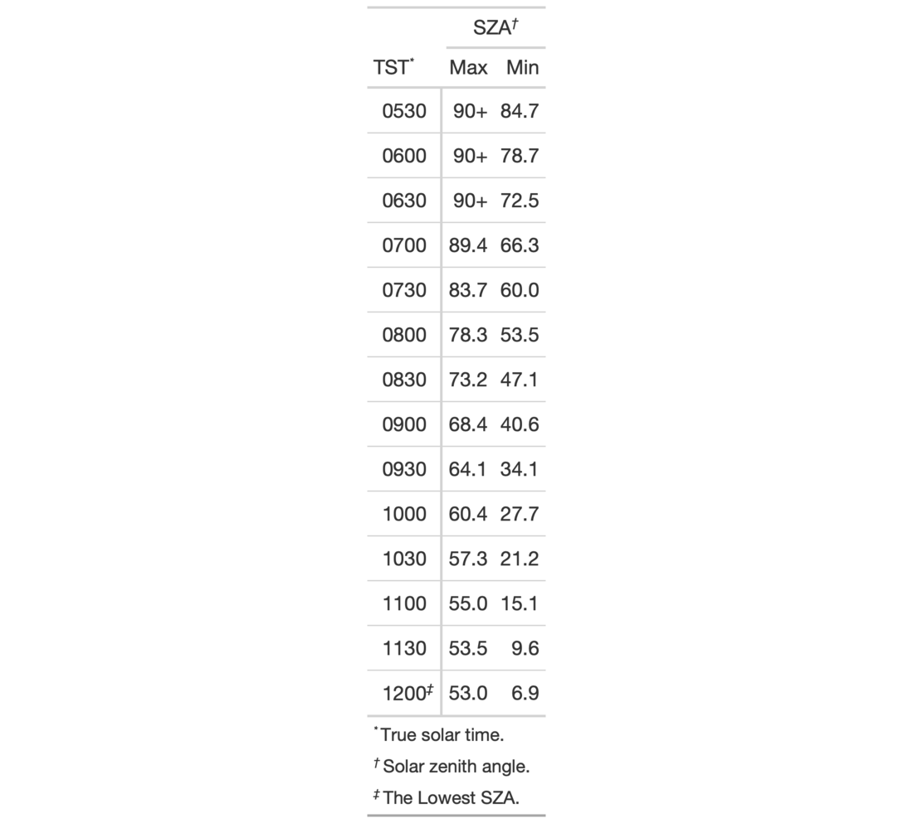

| opt_footnote_marks {gt} | R Documentation |
Alter the footnote marks for any footnotes that may be present in the table.
Either a vector of marks can be provided (including Unicode characters), or,
a specific keyword could be used to signify a preset sequence. This function
serves as a shortcut for using tab_options(footnotes.marks = {marks})
opt_footnote_marks(data, marks)
data |
A table object that is created using the |
marks |
Either a character vector of length greater than 1 (that will
represent the series of marks) or a single keyword that represents a preset
sequence of marks. The valid keywords are: |
We can supply a vector of that will represent the series of marks.
The series of footnote marks is recycled when its usage goes beyond the
length of the set. At each cycle, the marks are simply doubled, tripled, and
so on (e.g., * -> ** -> ***). The option exists for providing keywords
for certain types of footnote marks. The keywords are:
"numbers": numeric marks, they begin from 1 and these marks are not
subject to recycling behavior
"letters": miniscule alphabetic marks, internally uses the letters
vector
which contains 26 lowercase letters of the Roman alphabet
"LETTERS": majuscule alphabetic marks, using the LETTERS vector
which has 26 uppercase letters of the Roman alphabet
"standard": symbolic marks, four symbols in total
"extended": symbolic marks, extends the standard set by adding two
more symbols, making six
An object of class gt_tbl.

9-1
Other Table Option Functions:
opt_align_table_header(),
opt_all_caps(),
opt_css(),
opt_row_striping(),
opt_table_font(),
opt_table_lines(),
opt_table_outline()
# Use `sza` to create a gt table,
# adding three footnotes; call
# `opt_footnote_marks()` to specify
# which footnote marks to use
tab_1 <-
sza %>%
dplyr::group_by(latitude, tst) %>%
dplyr::summarize(
SZA.Max = max(sza),
SZA.Min = min(sza, na.rm = TRUE)
) %>%
dplyr::ungroup() %>%
dplyr::filter(latitude == 30, !is.infinite(SZA.Min)) %>%
dplyr::select(-latitude) %>%
gt(rowname_col = "tst") %>%
tab_spanner_delim(delim = ".") %>%
fmt_missing(
columns = everything(),
missing_text = "90+"
) %>%
tab_stubhead("TST") %>%
tab_footnote(
footnote = "True solar time.",
locations = cells_stubhead()
) %>%
tab_footnote(
footnote = "Solar zenith angle.",
locations = cells_column_spanners(spanners = "SZA")
) %>%
tab_footnote(
footnote = "The Lowest SZA.",
locations = cells_stub(rows = "1200")
) %>%
opt_footnote_marks(marks = "standard")